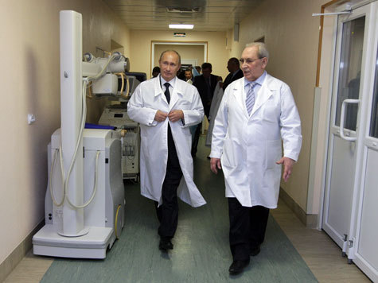

Пока я вчера смотрел фантастическую комедию Айвана Рэйтмена «Эволюция» по телевизору ничего не подозревая премьер-министр В.Путин "отвечал на вопросы россиян".
Россиянам, в принципе давно известно, что в государстве управляемом Владимиром Владимировичем не то, чтобы все благополучно. Уверен, догадывается об этом и сам глава правительства. Но. Этикет есть этикет. Королеве нужно открыть дверь лимузина, руководство должно ходить во власть.
Путин опять во власть сходил. Было много вопросов разной остроты. Разумеется не прошел вопрос про Транснефть от Навального. Но что за шоу без перчинки? Настоящим революционным кличем звучали слова недалекой от Москвы больницы в Иваново. Там дескать показуха, а мужики-то не знают. Премьер держался молодцом. Обещал разобраться и покарать.
На утро врач проснулся… бывшим врачом.

Ну понятно, вроде как знал ведь на что шел. С рогаткой, против танка. Он разумеется всех обманул и никогда даже в больнице этой не работал. Прямой эфир увольнения опубликован в этом ЖЖ.
Но есть там один нюанс.
UPDATE-8: 8:43
http://lenta.ru/news/2010/12/17/beforehand/ Как рассказал Хренов, после посещения Путиным больницы в ноябре жители Иваново несколько дней обсуждали, как местные власти пустили премьеру пыль в глаза. Тогда врач написал Путину письмо на ту же тему.
"Я не ждал, что мне кто-то ответит, но через несколько дней мне позвонила из его приемной некая Валентина, чтобы уточнить данные. Еще через какое-то время перезвонили с ВГТРК и спросили, могу ли я воспроизвести свои слова в "прямой линии". Я согласился - почему нет, может, хотя бы Путин порядок наведет?", - рассказал Хренов.
То есть на самом деле не было никакого революционного прорыва. Звонок был полностью инициирован именно администрацией премьер-министра, с целью добавить шоу остроты. Добавили перца, премьер в белом, все остальные… ну вы поняли. У нас ведь демократия. Вы не думайте.